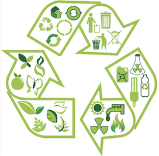
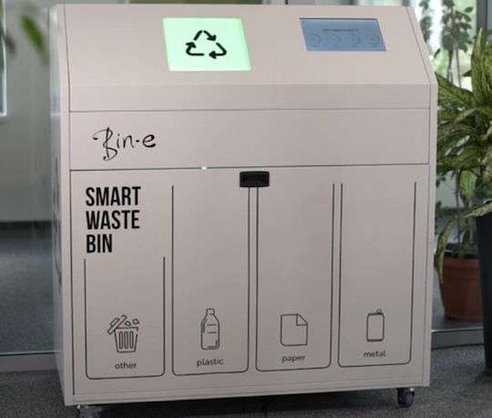

Essay
Why Trash of the Week?
I decided to start recording and sharing my trash each week to be able to grasp a good idea of what sort of waste I produce as an individual. This would allow me to be aware of my waste generation patterns and my consumption of products each week. This would be a trash tracker for myself and possibly remind others who might also have similar stuff they might want to dispose of. Most of these trash that I’ve found are mostly just lying around my room and are of no use to me anymore and I’ve been procrastinating on disposing them for a long time. With this project it encouraged me to find them and start disposing of them and this helped with removing junk/ trash in my room. Besides that, by sharing my trash weekly, it can raise awareness on just how much trash an individual produces whether on a weekly basis and it can also encourage waste reduction and recycling of items.
I hope through sharing my weekly trash, I would be able to impact people’s daily choices by thinking thoroughly before deciding to purchase or obtain something. I hope to be able to possibly connect with more like-minded people and work together in living a more sustainable and greener lifestyle as well as keeping one’s living space clean all the time. Moreover, through this weekly trash record, it would be a personal challenge to me to start reducing waste and rethink my own choices before buying something impulsively without thinking much of the aftereffects. It allows me to start finding other alternatives for items, possibly get items that are more durable to avoid producing as much waste or be more cautious when using items to avoid damaging them and having to get replacements. It can also encourage me to be more creative in maybe reusing some items for another purpose instead of buying it. This also enable me to start living a more minimalistic lifestyle as well as being an example to others in reducing waste production starting from home.
Back to Top
Trash Analysis
Thill has mentioned in his chapter, “Trash Familiars/Tabflab”, from his book, Waste, that waste actually provides a lot of insights to the concept of trash and its cultural significance to our daily lifes. He states, “Once desire has been squeezed out of it, we’re left with the waste products of those desires” (Thill, 29) I think this quote of his really resonates and relates to this trash of the week project’s goal. Most of the wastes/ trash that are produced are all aftereffects of fulfilling our desires. The items are all initially obtained to fulfil our desires and after it has done its job, it is then turned into waste similar to what Thill has said. However if we were to recycle or reuse the waste to fulfil another desire, it can somewhat reduce our waste generation as there would be lesser inputs or consumption of items into our daily life, resulting in lesser outputs or production of wastes.
Besides that, this project does not only act as a waste management project for individuals like me but it also acts like a lifestyle tracker for me and others who are interested and this aligns with what Muniz stated in his article, “If we care about how these items will reflect upon us, we will consider each purchase we make and each object we produce”. This trash of the week project made me more aware of the trash I’ve been producing and what it represents about my lifestyle and being aware of this made me reconsider things before buying. Is there a way I can reuse something else to fulfil the same exact purpose of the product I’m about to buy, or is there another alternative that is much more durable and environmental friendly? I would ask these questions to myself before deciding on getting something. This then brings us to what Newman has discussed about in her interview, she mentioned that trash can “reveal details about family composition, socioeconomic status, ethnicity, gender roles, tastes and hobbies, etc”. Others can see from the sort of trash I’ve produced weekly and sort of know what sort of lifestyle I led. For example, if one of the trash was a skin care product, it can be said that I am a person who takes care of myself and if my trash is a cooking or kitchen utensil, it means I most likely love to cook or bake. Trash is a reflection of our lives and when more research and study is done, it can reveal so much more details on the type of lifestyle the individual has led.
Back to TopTrash and Technology
From an article that I have found, technology is seen to be slowly helping us humans with trash sorting and waste management. An example that was mentioned in the article was a smart waste bin, Bin-e, that is created by a company in Poland, where people can just throw any trash into the bin and it will automatically identify and sort the trash for us. I think with the development of these advanced technology, waste management wouldn’t seem like a hard tedious chore to do by everyone and I think this would encourage more people to start recycling trash. However, I think these advancement would also do some harm to the environment as people will not think too much into the waste generation in their lifestyle since the technology does the sorting and recycling for us. More awareness needs to be made to the public on waste management with this advancement in technology on waste management so that it can overall reduce the consumption of products and production of waste. I also found another online garbage awareness project. It is a similar idea to our trash of the week project and it’s goals is to reduce waste by raising awareness of the trash that we are consuming and putting into the environment. This project shares a lot of resources, tips and some products that helps achieve this goal or reducing trash and I think it is a very good project to be promoted to the public.
Bin-e, a smart waste bin that uses AI to sort your trash
Back to TopReferences
- Newman, Sarah. An Archeologist Talks Trash, UChicago News, 2023. https://news.uchicago.edu/story/archaeologist-talks-tras
- Thill, Brian. “Trash Familiars/Tabflab”, chapter from Waste, 2015, p.19-35.
- Muniz, Vik. “Reframing Trash Into Art”, The New York Times, 2023. https://www.nytimes.com/2023/12/06/special-series/vik-muniz-brazil-garbage-art.html
- Samsukha, Amit. “Role of Technologies and Mobile Apps in Waste Management”, 2022. https://www.forbes.com/sites/forbestechcouncil/2022/09/09/role-of-technologies-and-mobile-apps-in-waste-management/?sh=27f7025e7d26
- The Garbage Awareness Project. https://thegarbageawarenessproject.com/